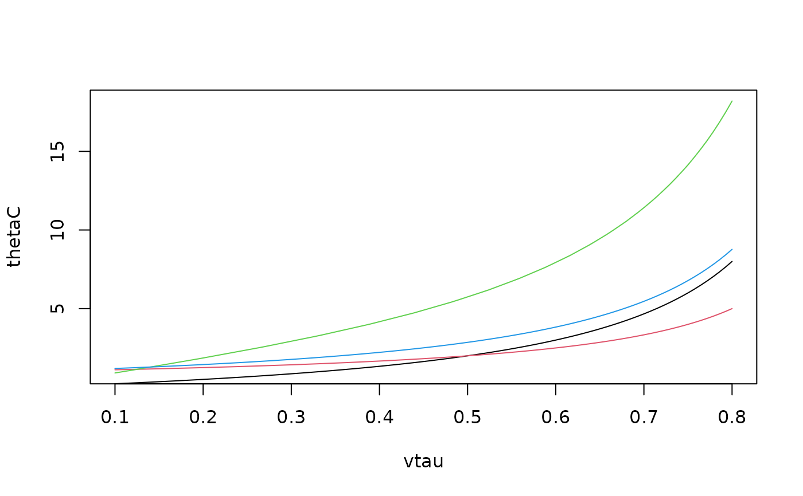

R/BiCopTau2Par.R
BiCopTau2Par.RdThis function computes the parameter of a (one parameter) bivariate copula for a given value of Kendall's tau.
BiCopTau2Par(family, tau, check.taus = TRUE)integer; single number or vector of size n; defines the
bivariate copula family: 0 = independence copula 1 =
Gaussian copula 2 = Student t copula (Here only the first
parameter can be computed) 3 = Clayton copula 4 =
Gumbel copula 5 = Frank copula 6 = Joe copula 13 = rotated Clayton copula (180 degrees; survival Clayton'') \cr `14` = rotated Gumbel copula (180 degrees; survival Gumbel'') 16 = rotated Joe copula (180 degrees; ``survival Joe'') 23
= rotated Clayton copula (90 degrees)
`24` = rotated Gumbel copula
(90 degrees)
`26` = rotated Joe copula (90 degrees)
`33` =
rotated Clayton copula (270 degrees)
`34` = rotated Gumbel copula
(270 degrees)
`36` = rotated Joe copula (270 degrees)
Note that
(with exception of the t-copula) two parameter bivariate copula families
cannot be used.
numeric; single number or vector of size n; Kendall's tau
value (vector with elements in \([-1,1]\)).
logical; default is TRUE; if FALSE, checks
for family/tau-consistency are omitted (should only be used with care).
Parameter (vector) corresponding to the bivariate copula family and the value(s) of Kendall's tau (\(\tau\)).
No.
(family) | Parameter (par) |
1, 2 | \(\sin(\tau \frac{\pi}{2})\) |
3, 13 | \(2\frac{\tau}{1-\tau}\) |
4, 14 | \(\frac{1}{1-\tau}\) |
5 | no closed form expression (numerical inversion) |
6, 16 | no closed form expression (numerical inversion) |
23, 33 | \(2\frac{\tau}{1+\tau}\) |
24, 34 | \(-\frac{1}{1+\tau}\) |
26, 36 | no closed form expression (numerical inversion) |
The number n can be chosen arbitrarily, but must agree across
arguments.
Joe, H. (1997). Multivariate Models and Dependence Concepts. Chapman and Hall, London.
Czado, C., U. Schepsmeier, and A. Min (2012). Maximum likelihood estimation of mixed C-vines with application to exchange rates. Statistical Modelling, 12(3), 229-255.
## Example 1: Gaussian copula
tau0 <- 0.5
rho <- BiCopTau2Par(family = 1, tau = tau0)
BiCop(1, tau = tau0)$par # alternative
#> [1] 0.7071068
## Example 2:
vtau <- seq(from = 0.1, to = 0.8, length.out = 100)
thetaC <- BiCopTau2Par(family = 3, tau = vtau)
thetaG <- BiCopTau2Par(family = 4, tau = vtau)
thetaF <- BiCopTau2Par(family = 5, tau = vtau)
thetaJ <- BiCopTau2Par(family = 6, tau = vtau)
plot(thetaC ~ vtau, type = "l", ylim = range(thetaF))
lines(thetaG ~ vtau, col = 2)
lines(thetaF ~ vtau, col = 3)
lines(thetaJ ~ vtau, col = 4)

## Example 3: different copula families
theta <- BiCopTau2Par(family = c(3,4,6), tau = c(0.4, 0.5, 0.6))
BiCopPar2Tau(family = c(3,4,6), par = theta)
#> [1] 0.4 0.5 0.6
# \dontshow{
# Test BiCopTau2Par
BiCopTau2Par(family = 0, tau = c(0.4,0.5,0.6))
#> [1] 0 0 0
BiCopTau2Par(family = 1, tau = c(0.4,0.5,0.6))
#> [1] 0.5877853 0.7071068 0.8090170
BiCopTau2Par(family = 2, tau = c(0.4,0.5,0.6))
#> [1] 0.5877853 0.7071068 0.8090170
BiCopTau2Par(family = 3, tau = c(0.4,0.5,0.6))
#> [1] 1.333333 2.000000 3.000000
BiCopTau2Par(family = 4, tau = c(0.4,0.5,0.6))
#> [1] 1.666667 2.000000 2.500000
BiCopTau2Par(family = 5, tau = c(0.4,0.5,0.6))
#> [1] 4.168941 5.747564 7.940414
BiCopTau2Par(family = 6, tau = c(0.4,0.5,0.6))
#> [1] 2.219070 2.856257 3.826659
BiCopTau2Par(family = 13, tau = c(0.4,0.5,0.6))
#> [1] 1.333333 2.000000 3.000000
BiCopTau2Par(family = 14, tau = c(0.4,0.5,0.6))
#> [1] 1.666667 2.000000 2.500000
BiCopTau2Par(family = 16, tau = c(0.4,0.5,0.6))
#> [1] 2.219070 2.856257 3.826659
BiCopTau2Par(family = 23, tau = -c(0.4,0.5,0.6))
#> [1] -1.333333 -2.000000 -3.000000
BiCopTau2Par(family = 24, tau = -c(0.4,0.5,0.6))
#> [1] -1.666667 -2.000000 -2.500000
BiCopTau2Par(family = 26, tau = -c(0.4,0.5,0.6))
#> [1] -2.219070 -2.856257 -3.826659
BiCopTau2Par(family = 33, tau = -c(0.4,0.5,0.6))
#> [1] -1.333333 -2.000000 -3.000000
BiCopTau2Par(family = 34, tau = -c(0.4,0.5,0.6))
#> [1] -1.666667 -2.000000 -2.500000
BiCopTau2Par(family = 36, tau = -c(0.4,0.5,0.6))
#> [1] -2.219070 -2.856257 -3.826659
BiCopTau2Par(family = 41, tau = c(0.4,0.5,0.6))
#> [1] 3.278015 4.836848 7.703827
BiCopTau2Par(family = 51, tau = c(0.4,0.5,0.6))
#> [1] 3.278015 4.836848 7.703827
BiCopTau2Par(family = 61, tau = c(0.4,0.5,0.6))
#> [1] -0.3583378 -0.2699585 -0.1968076
BiCopTau2Par(family = 71, tau = c(0.4,0.5,0.6))
#> [1] -0.3583378 -0.2699585 -0.1968076
BiCopTau2Par(family = 41, tau = -c(0.4,0.5,0.6))
#> [1] 0.3583378 0.2699585 0.1968076
BiCopTau2Par(family = 51, tau = -c(0.4,0.5,0.6))
#> [1] 0.3583378 0.2699585 0.1968076
BiCopTau2Par(family = 61, tau = -c(0.4,0.5,0.6))
#> [1] -3.278015 -4.836848 -7.703827
BiCopTau2Par(family = 71, tau = -c(0.4,0.5,0.6))
#> [1] -3.278015 -4.836848 -7.703827
# }